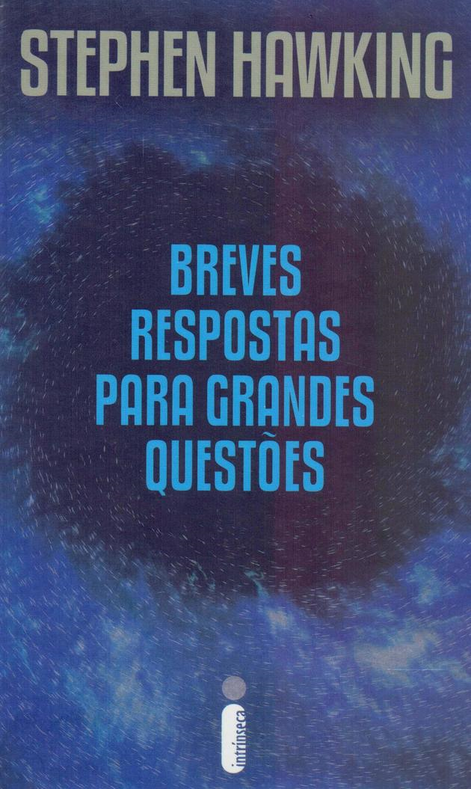

1984
Um homem perde sua identidade vivendo sob um regime repressivo. Nesta história baseada no clássico de George Orwell, Winston Smith (John Hurt) é um funcionário público cuja função é reescrever a história de forma a colocar os líderes de um país fictício sob uma luz positiva.
A Garota do Lago
Descrição. Summit Lake, uma pequena cidade entre montanhas, é esse tipo de lugar, bucólico e com encantadoras casas dispostas à beira de um longo trecho de água intocada. Duas semanas atrás, a estudante de direito Becca Eckersley foi brutalmente assassinada em uma dessas casas.

Breves Resposta Para Grandes Questões
Stephen Hawking foi o mais conceituado cientista desde Einstein, ficou conhecido pelo seu trabalho revolucionário nos campos da física e da cosmologia.